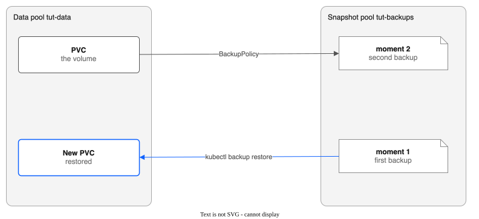

Part 10: Backup and Restore¶
Tutorial Series: Index | Part 1: Pool Creation | Part 10
Back up a volume on a schedule into a pool that holds only backups. Change the volume, wait for a second backup, and restore the volume as it was at the first moment. Then delete the backups. The words moment, restore point and snapshot pool are defined in CONTEXT.md.
Time: about 30 minutes, most of it waiting for backups. Status: backups are Experimental. See BACKUP-RECOVERY.md for the full reference.

Prerequisites¶
- The driver runs on your cluster, with the admission webhooks on (the chart default). See Part 1.
- The
kubectl-backupplugin is on your path. Build it withmake build-backupand copybin/kubectl-backupto a directory in yourPATH. Check it:
- Your login can create cluster-wide resources (pools and policies).
Step 1: Set variables and make the namespace¶
export NS=pool-tutorial-backup
export DATA_POOL=tut-data
export SNAP_POOL=tut-backups
export POLICY=tut-nightly
oc create namespace ${NS}
Step 2: Make a data pool and a snapshot pool¶
The data pool holds your volume. The snapshot pool holds only backups, so a lost or full data share does not take the backups with it. The driver refuses a snapshot pool that holds any volume, and it refuses to make a volume on a pool that a policy uses as its snapshot pool.
Pick the zone of your cluster's workers:
export ZONE=$(oc get nodes -o jsonpath='{range .items[*]}{.metadata.labels.topology\.kubernetes\.io/zone}{"\n"}{end}' | sort | uniq -c | sort -rn | awk 'NR==1{print $2}')
echo ${ZONE}
for p in ${DATA_POOL} ${SNAP_POOL}; do
cat <<EOF | oc apply -f -
apiVersion: storage.ibmcloud.io/v1alpha1
kind: FileSharePool
metadata:
name: ${p}
spec:
zone: ${ZONE}
profile: dp2
shareSizeGB: 100
iops: 3000
maxShares: 1
initialShares: 1
autoExpand: false
allocationStrategy: spread
defaultPermissions: "0777"
EOF
done
Wait until both pools are Ready. A share takes one to three minutes.
Expected: PHASE is Ready for both. The driver also makes a StorageClass with the name of each pool.
Step 3: Make a volume and write some files¶
The label backup: "yes" on the PVC is what the policy selects.
cat <<EOF | oc apply -n ${NS} -f -
apiVersion: v1
kind: PersistentVolumeClaim
metadata:
name: files
labels:
backup: "yes"
spec:
storageClassName: ${DATA_POOL}
accessModes: [ReadWriteMany]
volumeMode: Filesystem
resources:
requests:
storage: 1Gi
EOF
Run a pod that writes the first content and then waits:
cat <<EOF | oc apply -n ${NS} -f -
apiVersion: v1
kind: Pod
metadata:
name: files-writer
spec:
containers:
- name: writer
image: registry.access.redhat.com/ubi9/ubi-minimal:latest
command: ["/bin/bash", "-c"]
args:
- |
mkdir -p /data/a
echo first > /data/a/1
echo first > /data/keep
touch /data/written
sleep 36000
volumeMounts:
- name: data
mountPath: /data
volumes:
- name: data
persistentVolumeClaim:
claimName: files
EOF
oc wait -n ${NS} --for=condition=Ready pod/files-writer --timeout=300s
oc exec -n ${NS} files-writer -- test -f /data/written && echo written
Expected: written.
Step 4: Make the backup policy¶
The policy backs up every PVC with the label backup=yes in the namespace pool-tutorial-backup, every 5 minutes, and keeps each backup for 48 hours. The shortest schedule is one minute. The shortest keep time is one hour.
cat <<EOF | oc apply -f -
apiVersion: storage.ibmcloud.io/v1alpha1
kind: BackupPolicy
metadata:
name: ${POLICY}
spec:
snapshotPool: ${SNAP_POOL}
schedule: 5m
keepFor: 48h
namespaces: [${NS}]
selector:
matchLabels:
backup: "yes"
EOF
Check the policy:
Expected: PHASE is Active. If it is Error, run oc get backuppolicy ${POLICY} -o jsonpath='{.status.message}'. The usual cause is a snapshot pool that is not Ready yet.
The controller makes a ReplicationPolicy named backup-${POLICY}-... for each source pool. Do not edit it. The backup controller sets it back.
Step 5: Wait for the first backup¶
Repeat until the row for ${NS}/files shows a time under LAST BACKUP. This takes as long as the first copy. The row shows sync in progress in the ERROR column until the first copy ends, and shows the time within seconds after that.
Expected:
POLICY VOLUME VM LAST BACKUP OLDEST POINTS CONSISTENCY STATE ERROR
tut-nightly pool-tutorial-backup/files - 2026-10-22T10:05:12Z 2026-10-22T10:05:12Z 0 FileCopy active
FileCopy means the volume is a plain volume. The files were copied one by one, so the backup is only as consistent as the files. See CONTEXT.md. POINTS counts the earlier moments you can restore. It is 0 after the first backup.
Write down the time under LAST BACKUP. This is the first moment.
export FIRST=$(oc get backuppolicy ${POLICY} -o jsonpath='{.status.volumes[0].lastBackupTime}')
echo ${FIRST}
Step 6: Change the volume and wait for a second backup¶
oc exec -n ${NS} files-writer -- bash -c 'echo second > /data/a/1; echo new > /data/b; rm /data/keep'
Wait for POINTS to reach 1:
Expected: POINTS is 1, and OLDEST is the first moment. The volume now has two moments. A new moment is made every 5 minutes whether or not the files change, so POINTS is higher if you waited longer. Restore a moment from before the change: FIRST, or OLDEST.
Step 7: Restore the first moment to a new PVC¶
A restore makes a new PVC. It never writes over a volume that exists. The command waits until the copy ends.
kubectl backup restore --policy ${POLICY} --pvc ${NS}/files --to ${NS}/files-first \
--moment ${FIRST} --wait
Expected: the command prints the phases Pending, Provisioning, Restoring, then Done: pool-tutorial-backup/files-first holds the backup of <time>. The new PVC uses the StorageClass of the backed-up claim, unless you pass --storage-class. Without --moment, the restore uses the latest backup.
Mount the new PVC and look at it:
cat <<EOF | oc apply -n ${NS} -f -
apiVersion: v1
kind: Pod
metadata:
name: files-check
spec:
restartPolicy: Never
containers:
- name: check
image: registry.access.redhat.com/ubi9/ubi-minimal:latest
command: ["/bin/bash", "-c"]
args: ["cat /data/a/1; ls /data"]
volumeMounts:
- name: data
mountPath: /data
volumes:
- name: data
persistentVolumeClaim:
claimName: files-first
EOF
oc wait -n ${NS} --for=jsonpath='{.status.phase}'=Succeeded pod/files-check --timeout=300s
oc logs -n ${NS} files-check
Expected: the output is first, then a listing with a, keep and written, and no b. The restored volume holds the files as they were at the first moment.
The pod waits while the copy runs. A pod that mounts the new PVC does not start until the restore ends.
Step 8: See the state of the restore¶
Expected: one row, PHASE Done. A failed restore shows Failed, and status.message says why.
Step 9: Delete the backups of a volume¶
First stop the policy from backing up the volume. Remove the label, then wait for one backup cycle (5 minutes). kubectl backup list then shows the volume as retained.
Delete the backups. The command measures them, shows the paths and the size, and asks you to type the volume as namespace/name:
Use --yes instead of the typed answer in a script. Without a terminal, the command refuses to continue unless you pass --yes. The controller never deletes backups by itself before the keep time. The command refuses while the policy still backs up the volume, and while a restore of the volume runs.
Clean up¶
oc delete pod -n ${NS} files-writer files-check --ignore-not-found --force --grace-period=0
oc delete backuprestore --all
oc delete backuppolicy ${POLICY}
oc delete namespace ${NS} --timeout=120s
oc delete filesharepool ${DATA_POOL} ${SNAP_POOL}
Deleting a policy keeps its backups on the share. Deleting a pool deletes its VPC shares and everything on them, including backups. The driver blocks the pool delete while volumes or snapshots remain on it, so wait for the namespace to go first.
VMs¶
A BackupPolicy backs up a VM through its disks. If any disk of a VM has the label, all its disks are backed up together at one moment. The status shows FileSystemConsistent or CrashConsistent. Restore each disk at the same --moment and make a VM from the new PVCs. See BACKUP-RECOVERY.md.
What you learned¶
- A backup policy copies selected volumes into a snapshot pool on a schedule.
kubectl backup listshows each volume, its moments and its consistency.kubectl backup restoremakes a new PVC at any kept moment.kubectl backup deleteremoves backups on purpose.
Next¶
- Part 14: Restore a snapshot in the console
- Part 9: A COS bucket for backups sends backups out of the VPC.